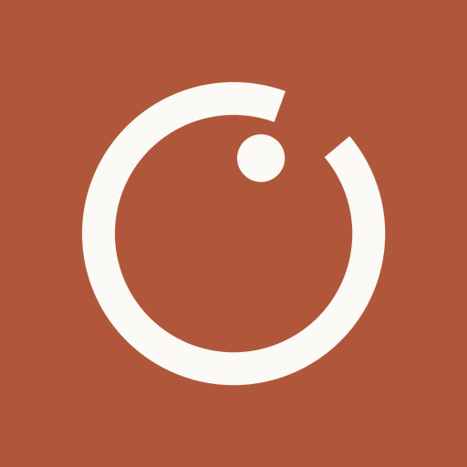
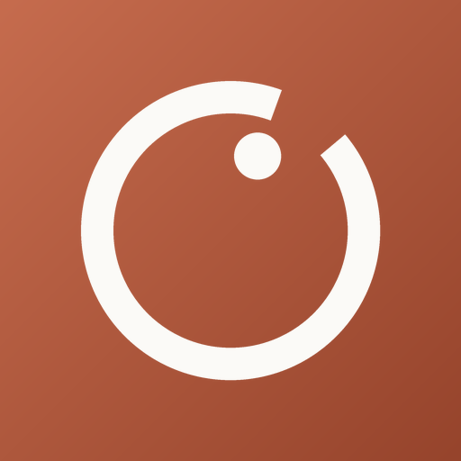
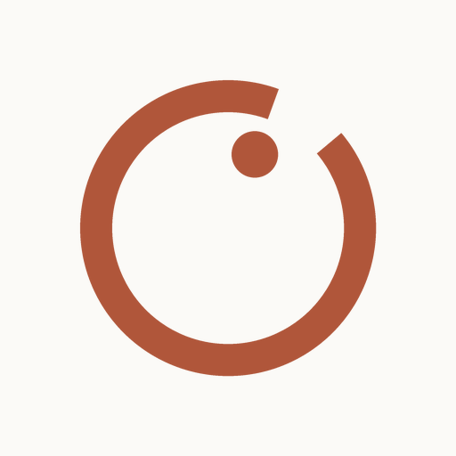
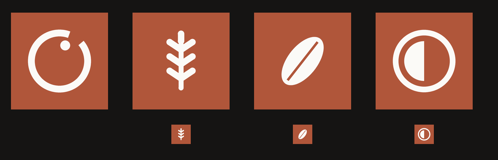

一个会先开口的学习伙伴。
名字就是它的设计说明：小满 —— 麦粒渐满，还没满。
小满是二十四节气第八个，麦子开始灌浆、将满而未满。它同时是三件事：
① 一个动词性的状态——不是"学完了"，是"正在变满"。这正是你高一到高三的三年。
② 一个分寸感——"满招损，谦受益"。小满之后没有"大满"这个节气，古人刻意留了缺。学习也一样：永远差一点，那一点才让人继续。
③ 一个女孩的名字——它同时也是她的名字（"小满"），和"她记得你、会先开口"的人设是同一件事。App 名 = 她的名，不用记两个词。
英文短名 Xiaoman，包名 site.e1e.xiaoman，域名 xiaoman.e1e.site（沿用你现有 e1e.site）。
备选（都读过，最终没选）：问渠（问渠那得清如许）——书卷气够但太长；温故——直接对应复习，但把产品做窄了；拾遗——好听，但"拾"字有补漏的被动感。
把"小满"做成一个精确的几何动作：一个几乎闭合的环，缺口在右上；缺口里一枚实心圆，已经进来了，但环还没合上。
读法有三层：未满（环不闭）· 入库（种子在缺口内、已进）· 将满（还差一步就闭合）。而且它在 24px 下仍然认得出来。


小尺寸没有另做简化版——形状本身就够简单，减笔画反而会破坏"未满"的含义。


前景层标记按 0.88 缩放画，最大外径 30.8 / 33（66dp 安全圆），任何遮罩下都不会被切。

| Token | 值 | 用途 |
|---|---|---|
| Clae | #B0563A | 主色：图标底、主按钮、当前导航项、薄弱数字 |
| Clae 亮端 | #C66C4E | 渐变左上 |
| Clae 暗端 | #96442C | 渐变右下 |
| Paper | #FBFAF7 | 界面底、图标前景色 |
| Sage | #5F7355 | 只用于"已掌握/已完成" |
第一轮四个几何方案：缺口朝上+种子被否（像笑脸）／缺口右上+点在环上被否（像 loading 转圈）／缺口右上+环内无点太像字母 C。

所以回到 E：缺口右上 + 种子落在环内。它不是最"漂亮"的那个，但它是最扛缩小、也最有话可说的那个。
| 文件 | 用途 |
|---|---|
brand/icon.svg | 矢量母版（平涂），512 视图框 |
brand/icon-grad.svg | 矢量母版（对角渐变） |
brand/ic_launcher_foreground.svg | 自适应前景层（108dp，安全圆内） |
brand/ic_launcher_monochrome.svg | 单色层（Android 16 强制主题化） |
brand/icon-{512,192,96,48,32,24}.png | 位图阶梯 |
brand/icon-grad-{512,192,96,48}.png | 渐变位图 |
brand/ic_launcher_{background,foreground,monochrome}-432.png | 自适应三层 |
brand/icon-inverse-512.png | 米底陶标（浅色环境/文档） |
mockup/gen_icon.py | 生成器：改一个参数就能出全套 |
重新出图：python mockup/gen_icon.py（几何在脚本顶部，和 SVG 母版一一对应）。